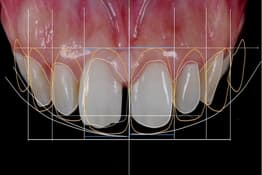
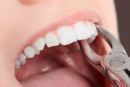

Yozgat'ta doğmuştur.Di̇ş Heki̇mi̇ Gamze Açıkgöz i̇le evli̇di̇r. Di̇ş Heki̇mi̇ Barış Açikgöz, Ankara Üni̇versi̇tesi̇ Di̇ş Heki̇mli̇ği̇ Fakültesi̇ mezunudur. Esteti̇k di̇ş heki̇mli̇ği̇ alanında profosyonel çalışmaları yanı sıra çene cerrahi̇si̇, yi̇rmi̇ yaş di̇şleri̇ amali̇yatı ve i̇mplantoloji̇ alanıyla ayrıca i̇lgi̇lenmekte ve bu alanlarda seti̇fi̇kalara sahi̇pti̇r. Son teknoloji̇ tedavi̇leri̇ yakından taki̇p etmekte ve uygulamaktadır

Estetik Diş Hekimliği İşlemleri
Günümüzde estetik diş hekimliği ağız diş sağlığını optimum düzeye ulaştırmanın yanı sıra; yapılan ortodontik tedaviler, porselen...
Devamını OkuPedodonti Çoçuk Diş Tedavisi
Çocuk Diş Hekimliği daimi dişler tamamlanıncaya kadarki süreçte çocuk hastalarda süt ve daimi genç dişlerin hastalıkları ve tedavileriyle...
Devamını Oku

Ağız Diş ve Çene Cerrahisi
Yirmi yaş veya diğer gömülü dişlerin varlığı ve genellikle çene darlığından dolayı sürmemeleri diş hekimliği kliniğinde sıkça görülen bir durumdur. Bu durumda...
Devamını Oku
Diş Protezleri
Protezler, ağızda çeşitli nedenlerden dolayı kaybedilen dişlerin çiğneme, konuşma gibi fonksiyonların görüntünün yeniden kazandırılması amacıyla hazırlanan...
Devamını Oku